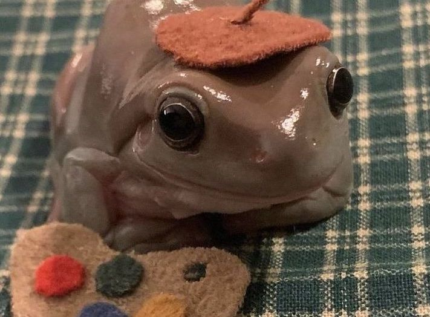

|
I got Albert mid quarintine on November 23 2020 making him four years old. I got him at a petco and he was as small as a penny. he has now grown to be about 3 inches in length. Albert is a male Whites' tree frog and you can hear him croak in the spring time.I used to put little outfits on him and take pictures as you can see on the right. This instagram account has over one thousand followers. Alberts diet consists of worms that I have to keep in my fridge. I have to feed him three times a week and clean out his cage once a month.I have to fill his water bowl everyday and spray his cage to keep it humid. Fun fact frogs drink through there skin so you have to buy a water bowl big enough for them to soak in. Frog also shed and eat there skin and you have to keep that in mind when feeding them to not overfeed your frog. Albert is very slimy and feels like raw chicken and will just sit in your hand chilling. You should always clean and wet your hands before handling a frog in order to not get your oils on there skin since frogs absorb things through it. |
 |